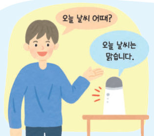

웃음, 화남, 울음, 생활 소음을 들려주며 학습한 소리 분류 모델이 웃을 때마다 횟수를 센다. 교과서 소리 데이터로 모델을 학습시키고 평가한 뒤, 내 목소리도 녹음해 넣어 보고, 사이렌을 알아듣는 긴급 차량 알림도 만들어 보자.
🎯 학습 목표 — 소리 데이터를 분류하는 인공지능 모델을 생성하고, 소리 분류 모델을 활용하여 웃음 계수 시스템을 구현할 수 있다.
1. 소리 데이터의 분류소리 분류 모델 186쪽
소리 분류 모델은 소리 데이터의 특성을 분석하여 특정 소리가 어떤 범주나 클래스에 해당하는지 예측하는 모델이다. 예를 들어 음성 인식 음식 주문 단말기에 메뉴의 소리 데이터를 충분히 학습시키면 주문자가 말한 메뉴를 인식할 수 있게 된다.

186쪽인공지능 스피커의 음성 인식186쪽환자의 숨소리와 기침 소리로 상태 진단
이 페이지의 모델은 무엇을 들을까? 소리를 짧은 조각으로 잘라 낮은 소리~높은 소리 22 구간의 세기를 재고, 구간마다 평균 세기, 흔들림, 변화량을 숫자로 바꾸어 가장 비슷한 훈련 소리를 찾아요. 아래에서 소리의 모양(스펙트로그램)을 직접 볼 수 있어요.
1소리의 모양을 비교해 보면 사이렌 소리는 . 소리 분류 모델은 이런 소리의 을 분석하여 클래스를 예측한다.
2~4. 문제 파악하기 · 데이터 수집 · 모델 생성 및 평가소리 데이터를 이용한 웃음 계수 시스템 187~189쪽
187쪽“웃으면 엔도르핀이 나와 건강에 도움이 된다고 합니다.”187쪽“웃음 횟수를 세어 주는 인공지능 모델을 만들어 볼까?”
문제 정의 웃음, 화남, 울음, 생활 소음의 소리를 학습시켜 웃을 때마다 횟수를 세어 알려 주는 프로그램 만들기. 인공지능 모델이 웃는 소리를 판별할 수 있도록 다양한 소리 데이터를 수집하고 잘못된 데이터를 삭제한 후 레이블링한다. 엔트리에서는 클래스마다 다섯 개 이상의 소리 데이터를 업로드한다.
1웃음 계수 모델의 클래스는 개이다. ‘웃음’만 학습시키지 않고 화남, 울음, 생활 소음도 함께 학습시키는 까닭은 이다.
2모델을 평가한 정확도와, 어떤 소리를 어떤 소리로 헷갈렸는지 써 보자. 성능을 높이려면 어떻게 해야 할까?
5. 모델 활용웃음 횟수를 알려 주는 프로그램 190쪽
➊ 소리를 입력받아 분류 결과를 확인한다. ➋ 분류 결과가 웃음이면 ‘웃음 횟수’에 1을 더하고, 웃음 횟수를 음성으로 안내한다.
🤖
웃음 횟수 0
먼저 위에서 모델을 학습시키세요. (학습하지 않았으면 자동으로 학습해요)
1분류 결과가 ‘웃음’일 때만 . 이때 쓰인 제어 구조는 이다.
2테스트 소리를 여러 번 들려주어 웃음 횟수를 세어 보자.
기록 없음
해 보기 · 모둠긴급 차량 알림 프로그램 만들기 191쪽
이어폰으로 음악을 들으며 길거리를 걷는 사람들이 많다. 이 때문에 차와 사람이 함께 다니는 길에서는 경찰차나 구급차가 다가와도 빠르게 인지하지 못할 때가 있다. 긴급 자동차가 사이렌을 울릴 때 이를 인식하는 인공지능 모델을 생성하고, 긴급 자동차가 다가오고 있음을 알려 주는 프로그램을 만들어 보자.
🎧 음악 듣는 중… (테스트 소리를 눌러 보세요)
1이 모델의 데이터 레이블은 이다. 생활 소음 클래스가 없으면 .
2인공지능 윤리 점검 나와 친구의 프로그램을 확인해 보자.
인공지능을 활용하려는 목적이 올바른가?
자료를 수집할 때 개인 정보나 저작권을 보호하도록 하였는가?
인공지능 모델을 학습시킬 때 편향된 결과를 산출할 가능성을 최소화하였는가?
인공지능 모델을 활용하는 프로그램이 타인에게 피해를 줄 가능성은 없는가?
스스로 정리하기소리 데이터를 이용한 인공지능 186~191쪽
1소리 분류 모델
소리 분류 모델은 의 특성을 분석하여 특정 소리가 어떤 범주나 클래스에 해당하는지 예측하는 모델이다.
✔옳으면 O, 옳지 않으면 X
엔트리에서 소리 분류 모델을 만들 때 클래스마다 다섯 개 이상의 소리 데이터를 업로드한다.
소리 분류 모델은 처음 듣는 소리도 항상 정확하게 분류한다.
평가 기준
스스로 평가
소리 데이터를 분류하는 인공지능 모델을 생성할 수 있는가?
소리 분류 모델을 활용하여 웃음 계수 시스템을 구현할 수 있는가?
제출학생 정보 · 제출하기
모든 활동을 마친 뒤 제출하면 전체가 한 번에 채점되고 피드백이 나타나요. 학년을 꼭 적어 주세요 — 답안은 선생님 스프레드시트(내 학년 시트의 정보 탭)에 기록돼요.